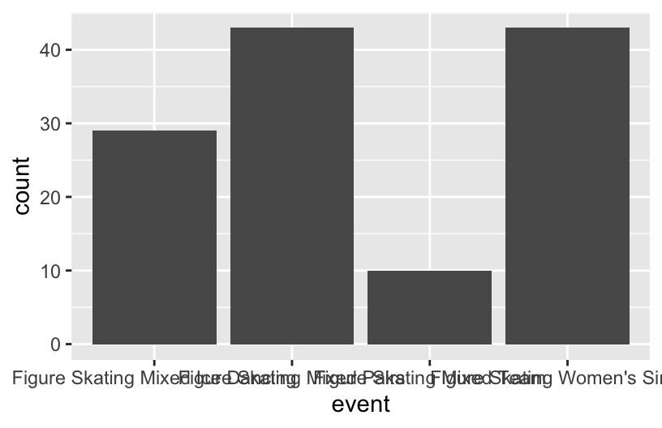
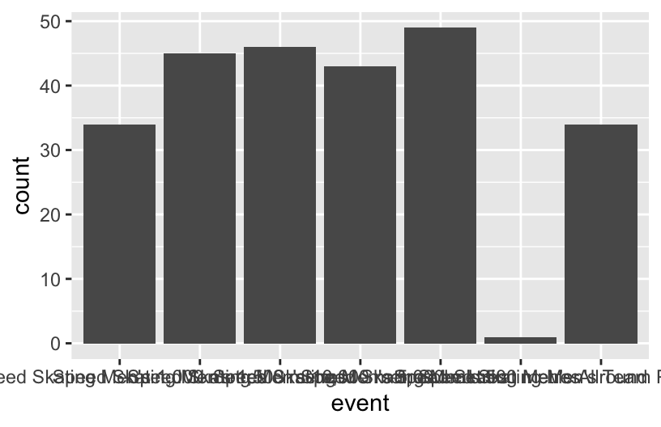

Appendix D — Figure Skating & Speed Skating
project olympidata
E Data & Library
F EDA/Wrangling Data
F.1 Filter by Sport
figure <- olympics %>%
filter(sport == "Figure Skating")%>%
drop_na()
figure
## # A tibble: 249 × 15
## id name sex age height weight team noc games year season city
## <dbl> <chr> <chr> <dbl> <dbl> <dbl> <chr> <chr> <chr> <dbl> <chr> <chr>
## 1 145 "Jeremy… M 28 175 70 Unit… USA 2014… 2014 Winter Sochi
## 2 1188 "Benjam… M 24 178 75 Unit… USA 2006… 2006 Winter Tori…
## 3 2869 "Scott … M 14 163 69 Unit… USA 1964… 1964 Winter Inns…
## 4 4392 "Marina… F 22 162 52 Fran… FRA 1998… 1998 Winter Naga…
## 5 4392 "Marina… F 26 162 52 Fran… FRA 2002… 2002 Winter Salt…
## 6 4799 "Shizuk… F 24 164 50 Japan JPN 2006… 2006 Winter Tori…
## 7 5451 "Mao As… F 19 163 50 Japan JPN 2010… 2010 Winter Vanc…
## 8 6092 "Ilya I… M 28 177 68 Russ… RUS 2002… 2002 Winter Salt…
## 9 6956 "Oksana… F 16 159 43 Ukra… UKR 1994… 1994 Winter Lill…
## 10 7933 "Petr B… M 25 165 65 Czec… TCH 1992… 1992 Winter Albe…
## # ℹ 239 more rows
## # ℹ 3 more variables: sport <chr>, event <chr>, medal <chr>
speed <- olympics %>%
filter(sport == "Speed Skating")%>%
drop_na()
speed
## # A tibble: 488 × 15
## id name sex age height weight team noc games year season city
## <dbl> <chr> <chr> <dbl> <dbl> <dbl> <chr> <chr> <chr> <dbl> <chr> <chr>
## 1 548 Yekater… F 23 167 65 Russ… RUS 2006… 2006 Winter Tori…
## 2 2378 Sylvia … F 17 165 57 East… GDR 1980… 1980 Winter Lake…
## 3 3782 Terje A… M 27 180 75 Norw… NOR 1980… 1980 Winter Lake…
## 4 4256 Matteo … M 21 185 81 Italy ITA 2006… 2006 Winter Tori…
## 5 4457 Daniela… F 31 165 60 Germ… GER 2006… 2006 Winter Tori…
## 6 4457 Daniela… F 35 165 60 Germ… GER 2010… 2010 Winter Vanc…
## 7 4604 Ants An… M 25 184 84 Sovi… URS 1964… 1964 Winter Inns…
## 8 5579 Jeanne … F 21 157 57 Unit… USA 1960… 1960 Winter Squa…
## 9 5908 Susan M… F 27 172 65 Cana… CAN 1994… 1994 Winter Lill…
## 10 5908 Susan M… F 31 172 65 Cana… CAN 1998… 1998 Winter Naga…
## # ℹ 478 more rows
## # ℹ 3 more variables: sport <chr>, event <chr>, medal <chr>F.2 Seperate by Sex
F.3 Characteristic by Medal
skate_medal <- olympics |>
filter(sport %in% c("Figure Skating", "Speed Skating")) |>
mutate(medal_won = ifelse(is.na(medal), "No", "Yes")) |>
group_by(sport, medal_won) |>
summarize(
avg_age = mean(age, na.rm = TRUE),
avg_height = mean(height, na.rm = TRUE),
avg_weight = mean(weight, na.rm = TRUE),
.groups = 'drop'
)
skate_medal
## # A tibble: 4 × 5
## sport medal_won avg_age avg_height avg_weight
## <chr> <chr> <dbl> <dbl> <dbl>
## 1 Figure Skating No 21.9 168. 59.4
## 2 Figure Skating Yes 24.0 169. 60.2
## 3 Speed Skating No 24.2 174. 69.9
## 4 Speed Skating Yes 25.4 175. 71.3F.4 Seperating by Country Participation
speed_participatory <- olympics |>
filter(sport %in% c("Speed Skating")) |>
group_by(noc, sport) |>
summarize(participation = n(), .groups = 'drop') |>
arrange(desc(participation))
speed_participatory
## # A tibble: 41 × 3
## noc sport participation
## <chr> <chr> <int>
## 1 USA Speed Skating 570
## 2 NED Speed Skating 503
## 3 JPN Speed Skating 474
## 4 CAN Speed Skating 433
## 5 NOR Speed Skating 410
## 6 GER Speed Skating 289
## 7 SWE Speed Skating 281
## 8 KOR Speed Skating 271
## 9 FIN Speed Skating 244
## 10 URS Speed Skating 222
## # ℹ 31 more rowsfigure_participatory <- olympics |>
filter(sport %in% c("Figure Skating")) |>
group_by(noc, sport) |>
summarize(participation = n(), .groups = 'drop') |>
arrange(desc(participation))
figure_participatory
## # A tibble: 55 × 3
## noc sport participation
## <chr> <chr> <int>
## 1 USA Figure Skating 293
## 2 CAN Figure Skating 228
## 3 GBR Figure Skating 174
## 4 FRA Figure Skating 130
## 5 GER Figure Skating 109
## 6 RUS Figure Skating 106
## 7 AUT Figure Skating 101
## 8 URS Figure Skating 94
## 9 JPN Figure Skating 91
## 10 ITA Figure Skating 90
## # ℹ 45 more rowsG Examining Characteristics by Event
figure_eventM <- figure_M %>%
group_by(event)%>%
summarize(avg_h = mean(height),
avg_w = mean(weight),
avg_a = mean(age),
count = n())
ggplot(figure_M, aes(x = event))+
geom_bar()figure_eventF <- figure_F %>%
group_by(event)%>%
summarize(avg_h = mean(height),
avg_w = mean(weight),
avg_a = mean(age),
count = n())
ggplot(figure_F, aes(x = event))+
geom_bar()
speed_eventM <- speed_M %>%
group_by(event)%>%
summarize(avg_h = mean(height),
avg_w = mean(weight),
avg_a = mean(age),
count = n())
ggplot(speed_M, aes(x = event))+
geom_bar()

H Examining Chracteristics by Medal Win
skate_medal |>
pivot_longer(cols = c(avg_age, avg_height, avg_weight), names_to = "attribute", values_to = "value") |>
group_by(sport, medal_won, attribute) |>
summarise(total_value = sum(value), .groups = "drop") |>
arrange(attribute, sport, medal_won) |>
gt() |>
tab_header(
title = "Summary of Characteristics by Sport and Medal Status",
subtitle = "Total values of attributes grouped by sport and medal won"
) |>
cols_label(
sport = "Sport",
medal_won = "Medal Won",
attribute = "Attribute",
total_value = "Total Value"
) |>
fmt_number(
columns = total_value,
decimals = 2
) |>
tab_options(
table.font.size = "small"
)| Summary of Characteristics by Sport and Medal Status | |||
|---|---|---|---|
| Total values of attributes grouped by sport and medal won | |||
| Sport | Medal Won | Attribute | Total Value |
| Figure Skating | No | avg_age | 21.87 |
| Figure Skating | Yes | avg_age | 24.02 |
| Speed Skating | No | avg_age | 24.18 |
| Speed Skating | Yes | avg_age | 25.37 |
| Figure Skating | No | avg_height | 168.14 |
| Figure Skating | Yes | avg_height | 168.51 |
| Speed Skating | No | avg_height | 173.94 |
| Speed Skating | Yes | avg_height | 175.18 |
| Figure Skating | No | avg_weight | 59.41 |
| Figure Skating | Yes | avg_weight | 60.24 |
| Speed Skating | No | avg_weight | 69.87 |
| Speed Skating | Yes | avg_weight | 71.26 |
skate_medal |>
pivot_longer(cols = c(avg_age, avg_height, avg_weight), names_to = "attribute", values_to = "value") |>
ggplot(aes(y = sport, x = value, fill = medal_won)) +
geom_bar(stat = "identity", position = "dodge", width = 0.5) +
facet_wrap(~attribute, scales = "free_x") +
labs(
title = "Characteristics of Medal Winners vs Non-Medalists",
x = "Average Value",
y = "Sport",
fill = "Medal Won"
) +
theme_minimal()I Top Participating Skating Countries
speed_participatory |>
slice_max(participation, n = 10) |>
ggplot(aes(x = reorder(noc, participation), y = participation, fill = sport)) +
geom_bar(stat = "identity", position = "dodge") +
coord_flip() +
labs(
title = "Top 10 Countries by Participation in Skating",
x = "Country",
y = "Number of Athletes",
fill = "Sport"
) +
theme_minimal()figure_participatory |>
slice_max(participation, n = 10) |>
ggplot(aes(x = reorder(noc, participation), y = participation, fill = sport)) +
geom_bar(stat = "identity", position = "dodge") +
coord_flip() +
labs(
title = "Top 10 Countries by Participation in Skating",
x = "Country",
y = "Number of Athletes",
fill = "Sport"
) +
theme_minimal()